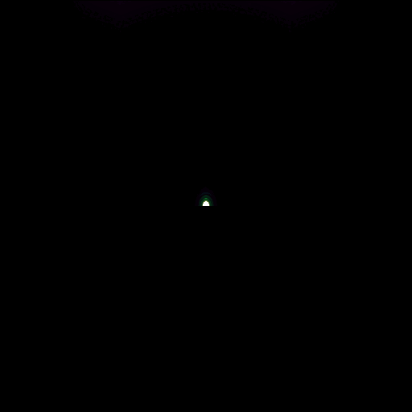

2D RHD Simulations: Shock Breakout in SN 1987A-like BSG
Multi-group FLD simulations exploring breakout signatures and early light-curve diagnostics. (Click to view summary)
Click anywhere to enter

Multi-group FLD simulations exploring breakout signatures and early light-curve diagnostics. (Click to view summary)
2D RHD of SBO in RSG progenitors with confined circumstellar shells. (Click to view summary)
Supernovae SBO with Confined-Shell CSM in Two Dimensions. (Click to view summary)
Shock Breakout in 2D MGFLD: Comparing SN1987A & RSG with different CSM. (Click to view summary)
Explore my DAAD research experiences: